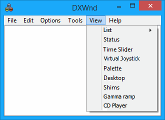
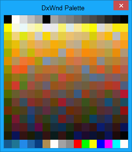
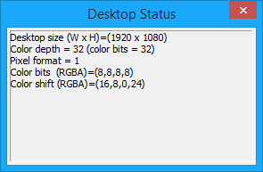

|
List |
Change between icon and detail listing of programs. |
|
Status |
See Status. |
|
Time Slider |
See Time Slider. |
|
Virtual joystick |
See Virtual joystick. |
|
Palette |
This command shows a window that displays the 256 colors in the current emulated palette, refreshing them once per second:  |
|
Desktop |
Shows a window that displays some information about the desktop's display settings, including its size, color depth, pixel format, color bits, and color shift.  |
|
Shims |
Shows a window that displays the list of Windows shims applied to the selected executable path. For more information on shims, see the related Wikipedia article. |
|
Gamma ramp |
Shows a window that displays the gamma ramp of the program. |
|
CD Player |
Shows the status of the DxWnd audio cd player emulator. See CD Player. |